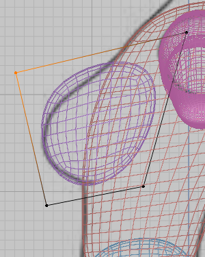

While I was musing about various animation styles and trying to come up with economical ways to implement an old-school cartoony anime style in one of my games, I came across a Reddit post (which I can no longer find) where someone said that they created a pixel art character more efficiently by using a Blender model as a base. I thought "Cool! maybe I could use blender to create similar characters, but without the pixelation!
And with that, off I went to learn Blender. I started with Blender Guru's donut tutorial, which is what the Reddit post recommended. Here is what I created:
And with the basics down, I decided to move on to modeling my character. I looked all over for modeling tutorials, and eventually found this one by Bran Sculpts
I started with the "Blocking Out" phase, where you create the character's body out of basic shapes. During this phase, you use reference images from different angles and try to line the shapes up. I found it very satisfying.
{kind=link}
Next was the sculpting phase, where you add in details. I really struggled with this phase, I was trying to copy the video very closely, and no matter what I did the lips, shoulder blades, collar bone, and elbows just looked wrong.
{kind=link}
Next was the retopology, where you essentially create a new model that preserves the details of the old one with fewer polygons, while also making sure that the boundaries of the polygons match up nicely with the boundaries of the moveable parts. Not only was this extremely tedious, but I also didn't understand what I was doing and the new topology was very inelegant.
{kind=link}
After that there was the rigging. This is where you put a skeleton in the character and then it allows you to animate them. This part was pretty easy.
{kind=link}
Finally, their was the hair. During this part of the tutorial, I learned a lot about materials and curves.
{kind=link}
Throughout the whole project, I was hyper-fixated on copying exactly what I saw. I was putting a lot of pressure on myself and had unrealistic expectations for how good the final product would be. I thought that, if I copied the tutorial exactly, I could create the same thing. Also, I had trouble motivating myself to finish when I knew that this wasn't my character and I would never use it in any of my projects. Ultimately, I decided to start over and follow the tutorial more loosely, this time creating my own character. I'll probably write a new article when I'm finished, but so far I'm already doing so much better. I am also realizing just how much I learned from this first model. I now realize that the point of my first model was not that my first model would be pretty. It was to learn how to model.